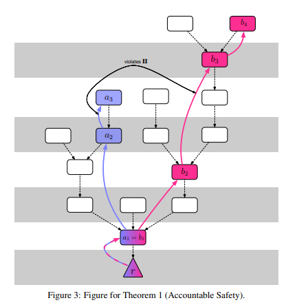
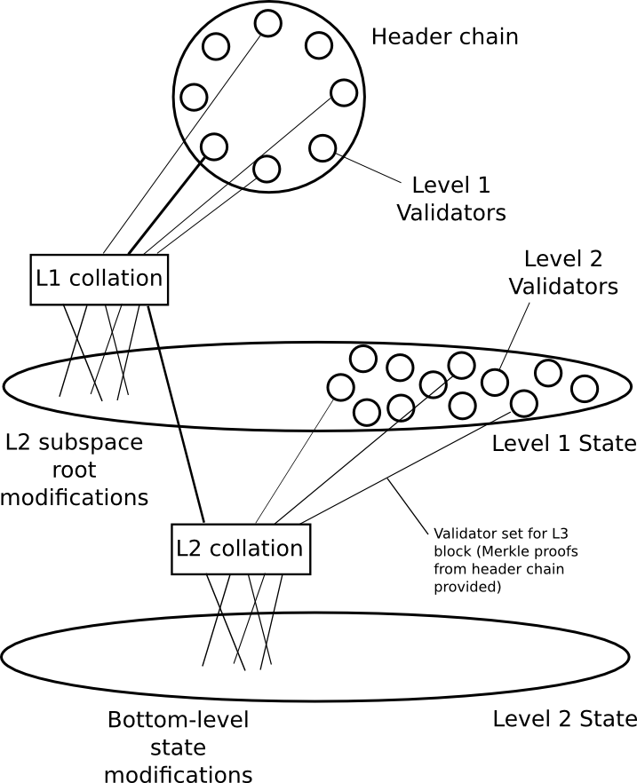
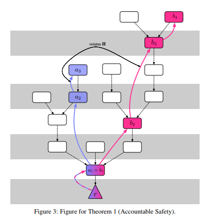
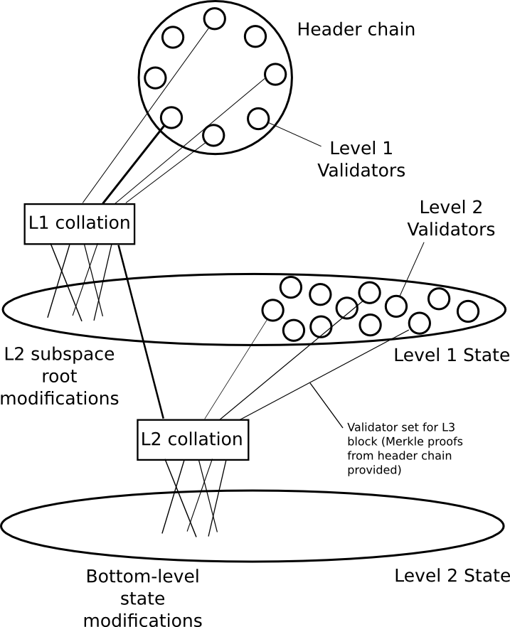

The roads not taken
2022 Mar 29
See all posts
The roads not taken
The Ethereum protocol development community has made a lot of decisions in the early stages of Ethereum that have had a large impact on the project's trajectory. In some cases, Ethereum developers made conscious decisions to improve in some place where we thought that Bitcoin erred. In other places, we were creating something new entirely, and we simply had to come up with something to fill in a blank - but there were many somethings to choose from. And in still other places, we had a tradeoff between something more complex and something simpler. Sometimes, we chose the simpler thing, but sometimes, we chose the more complex thing too.
This post will look at some of these forks-in-the-road as I remember them. Many of these features were seriously discussed within core development circles; others were barely considered at all but perhaps really should have been. But even still, it's worth looking at what a different Ethereum might have looked like, and what we can learn from this going forward.
Should we have gone with a much simpler version of proof of stake?
The Gasper proof of stake that Ethereum is very soon going to merge to is a complex system, but a very powerful system. Some of its properties include:
- Very strong single-block confirmations - as soon as a transaction gets included in a block, usually within a few seconds that block gets solidified to the point that it cannot be reverted unless either a large fraction of nodes are dishonest or there is extreme network latency.
- Economic finality - once a block gets finalized, it cannot be reverted without the attacker having to lose millions of ETH to being slashed.
- Very predictable rewards - validators reliably earn rewards every epoch (6.4 minutes), reducing incentives to pool
- Support for very high validator count - unlike most other chains with the above features, the Ethereum beacon chain supports hundreds of thousands of validators (eg. Tendermint offers even faster finality than Ethereum, but it only supports a few hundred validators)
But making a system that has these properties is hard. It took years of research, years of failed experiments, and generally took a huge amount of effort. And the final output was pretty complex.

If our researchers did not have to worry so much about consensus and had more brain cycles to spare, then maybe, just maybe, rollups could have been invented in 2016. This brings us to a question: should we really have had such high standards for our proof of stake, when even a much simpler and weaker version of proof of stake would have been a large improvement over the proof of work status quo?
Many have the misconception that proof of stake is inherently complex, but in reality there are plenty of proof of stake algorithms that are almost as simple as Nakamoto PoW. NXT proof of stake existed since 2013 and would have been a natural candidate; it had issues but those issues could easily have been patched, and we could have had a reasonably well-working proof of stake from 2017, or even from the beginning. The reason why Gasper is more complex than these algorithms is simply that it tries to accomplish much more than they do. But if we had been more modest at the beginning, we could have focused on achieving a more limited set of objectives first.
Proof of stake from the beginning would in my opinion have been a mistake; PoW was helpful in expanding the initial issuance distribution and making Ethereum accessible, as well as encouraging a hobbyist community. But switching to a simpler proof of stake in 2017, or even 2020, could have led to much less environmental damage (and anti-crypto mentality as a result of environmental damage) and a lot more research talent being free to think about scaling. Would we have had to spend a lot of resources on making a better proof of stake eventually? Yes. But it's increasingly looking like we'll end up doing that anyway.
The de-complexification of sharding
Ethereum sharding has been on a very consistent trajectory of becoming less and less complex since the ideas started being worked on in 2014. First, we had complex sharding with built-in execution and cross-shard transactions. Then, we simplified the protocol by moving more responsibilities to the user (eg. in a cross-shard transaction, the user would have to separately pay for gas on both shards). Then, we switched to the rollup-centric roadmap where, from the protocol's point of view, shards are just blobs of data. Finally, with danksharding, the shard fee markets are merged into one, and the final design just looks like a non-sharded chain but where some data availability sampling magic happens behind the scenes to make sharded verification happen.
|

|

|
|
Sharding in 2015
|
Sharding in 2022
|
But what if we had gone the opposite path? Well, there actually are Ethereum researchers who heavily explored a much more sophisticated sharding system: shards would be chains, there would be fork choice rules where child chains depend on parent chains, cross-shard messages would get routed by the protocol, validators would be rotated between shards, and even applications would get automatically load-balanced between shards!
The problem with that approach: those forms of sharding are largely just ideas and mathematical models, whereas Danksharding is a complete and almost-ready-for-implementation spec. Hence, given Ethereum's circumstances and constraints, the simplification and de-ambitionization of sharding was, in my opinion, absolutely the right move. That said, the more ambitious research also has a very important role to play: it identifies promising research directions, even the very complex ideas often have "reasonably simple" versions of those ideas that still provide a lot of benefits, and there's a good chance that it will significantly influence Ethereum's protocol development (or even layer-2 protocols) over the years to come.
More or less features in the EVM?
Realistically, the specification of the EVM was basically, with the exception fo security auditing, viable for launch by mid-2014. However, over the next few months we continued actively exploring new features that we felt might be really important for a decentralized application blockchain. Some did not go in, others did.
- We considered adding a
POST opcode, but decided against it. The POST opcode would have made an asynchronous call, that would get executed after the rest of the transaction finishes.
- We considered adding an
ALARM opcode, but decided against it. ALARM would have functioned like POST, except executing the asynchronous call in some future block, allowing contracts to schedule operations.
- We added logs, which allow contracts to output records that do not touch the state, but could be interpreted by dapp interfaces and wallets. Notably, we also considered making ETH transfers emit a log, but decided against it - the rationale being that "people will soon switch to smart contract wallets anyway".
- We considered expanding SSTORE to support byte arrays, but decided against it, because of concerns about complexity and safety.
- We added precompiles, contracts which execute specialized cryptographic operations with native implementations at a much cheaper gas cost than can be done in the EVM.
- In the months right after launch, state rent was considered again and again, but was never included. It was just too complicated. Today, there are much better state expiry schemes being actively explored, though stateless verification and proposer/builder separation mean that it is now a much lower priority.
Looking at this today, most of the decisions to not add more features have proven to be very good decisions. There was no obvious reason to add a POST opcode. An ALARM opcode is actually very difficult to implement safely: what happens if everyone in blocks 1...99999 sets an ALARM to execute a lot of code at block 100000? Will that block take hours to process? Will some scheduled operations get pushed back to later blocks? But if that happens, then what guarantees is ALARM even preserving? SSTORE for byte arrays is difficult to do safely, and would have greatly expanded worst-case witness sizes.
The state rent issue is more challenging: had we actually implemented some kind of state rent from day 1, we would not have had a smart contract ecosystem evolve around a normalized assumption of persistent state. Ethereum would have been harder to build for, but it could have been more scalable and sustainable. At the same time, the state expiry schemes we had back then really were much worse than what we have now. Sometimes, good ideas just take years to arrive at and there is no better way around that.
Alternative paths for LOG
LOG could have been done differently in two different ways:
- We could have made ETH transfers auto-issue a
LOG. This would have saved a lot of effort and software bug issues for exchanges and many other users, and would have accelerated everyone relying on logs that would have ironically helped smart contract wallet adoption.
- We could have not bothered with a
LOG opcode at all, and instead made it an ERC: there would be a standard contract that has a function submitLog and uses the technique from the Ethereum deposit contract to compute a Merkle root of all logs in that block. Either EIP-2929 or block-scoped storage (equivalent to TSTORE but cleared after the block) would have made this cheap.
We strongly considered (1), but rejected it. The main reason was simplicity: it's easier for logs to just come from the LOG opcode. We also (very wrongly!) expected most users to quickly migrate to smart contract wallets, which could have logged transfers explicitly using the opcode.
- was not considered, but in retrospect it was always an option. The main downside of (2) would have been the lack of a Bloom filter mechanism for quickly scanning for logs. But as it turns out, the Bloom filter mechanism is too slow to be user-friendly for dapps anyway, and so these days more and more people use TheGraph for querying anyway.
On the whole, it seems very possible that either one of these approaches would have been superior to the status quo. Keeping LOG outside the protocol would have kept things simpler, but if it was inside the protocol auto-logging all ETH transfers would have made it more useful.
Today, I would probably favor the eventual abolition of the LOG opcode from the EVM.
What if the EVM was something totally different?
There were two natural very different paths that the EVM could have taken:
- Make the EVM be a higher-level language, with built-in constructs for variables, if-statements, loops, etc.
- Make the EVM be a copy of some existing VM (LLVM, WASM, etc)
The first path was never really considered. The attraction of this path is that it could have made compilers simpler, and allowed more developers to code in EVM directly. It could have also made ZK-EVM constructions simpler. The weakness of the path is that it would have made EVM code structurally more complicated: instead of being a simple list of opcodes in a row, it would have been a more complicated data structure that would have had to be stored somehow. That said, there was a missed opportunity for a best-of-both-worlds: some EVM changes could have given us a lot of those benefits while keeping the basic EVM structure roughly as is: ban dynamic jumps and add some opcodes designed to support subroutines (see also: EIP-2315), allow memory access only on 32-byte word boundaries, etc.
The second path was suggested many times, and rejected many times. The usual argument for it is that it would allow programs to compile from existing languages (C, Rust, etc) into the EVM. The argument against has always been that given Ethereum's unique constraints it would not actually provide any benefits:
- Existing compilers from high-level languages tend to not care about total code size, whereas blockchain code must optimize heavily to cut down every byte of code size
- We need multiple implementations of the VM with a hard requirement that two implementations never process the same code differently. Security-auditing and verifying this on code that we did not write would be much harder.
- If the VM specification changes, Ethereum would have to either always update along with it or fall more and more out-of-sync.
Hence, there probably was never a viable path for the EVM that's radically different from what we have today, though there are lots of smaller details (jumps, 64 vs 256 bit, etc) that could have led to much better outcomes if they were done differently.
Should the ETH supply have been distributed differently?
The current ETH supply is approximately represented by this chart from Etherscan:

About half of the ETH that exists today was sold in an open public ether sale, where anyone could send BTC to a standardized bitcoin address, and the initial ETH supply distribution was computed by an open-source script that scans the Bitcoin blockchain for transactions going to that address. Most of the remainder was mined. The slice at the bottom, the 12M ETH marked "other", was the "premine" - a piece distributed between the Ethereum Foundation and ~100 early contributors to the Ethereum protocol.
There are two main criticisms of this process:
- The premine, as well as the fact that the Ethereum Foundation received the sale funds, is not credibly neutral. A few recipient addresses were hand-picked through a closed process, and the Ethereum Foundation had to be trusted to not take out loans to recycle funds received furing the sale back into the sale to give itself more ETH (we did not, and no one seriously claims that we have, but even the requirement to be trusted at all offends some).
- The premine over-rewarded very early contributors, and left too little for later contributors. 75% of the premine went to rewarding contributors for their work before launch, and post-launch the Ethereum Foundation only had 3 million ETH left. Within 6 months, the need to sell to financially survive decreased that to around 1 million ETH.
In a way, the problems were related: the desire to minimize perceptions of centralization contributed to a smaller premine, and a smaller premine was exhausted more quickly.
This is not the only way that things could have been done. Zcash has a different approach: a constant 20% of the block reward goes to a set of recipients hard-coded in the protocol, and the set of recipients gets re-negotiated every 4 years (so far this has happened once). This would have been much more sustainable, but it would have been much more heavily criticized as centralized (the Zcash community seems to be more openly okay with more technocratic leadership than the Ethereum community).
One possible alternative path would be something similar to the "DAO from day 1" route popular among some defi projects today. Here is a possible strawman proposal:
- We agree that for 2 years, a block reward of 2 ETH per block goes into a dev fund.
- Anyone who purchases ETH in the ether sale could specify a vote for their preferred distribution of the dev fund (eg. "1 ETH per block to the Ethereum Foundation, 0.4 ETH to the Consensys research team, 0.2 ETH to Vlad Zamfir...")
- Recipients that got voted for get a share from the dev fund equal to the median of everyone's votes, scaled so that the total equals 2 ETH per block (median is to prevent self-dealing: if you vote for yourself you get nothing unless you get at least half of other purchasers to mention you)
The sale could be run by a legal entity that promises to distribute the bitcoin received during the sale along the same ratios as the ETH dev fund (or burned, if we really wanted to make bitcoiners happy). This probably would have led to the Ethereum Foundation getting a lot of funding, non-EF groups also getting a lot of funding (leading to more ecosystem decentralization), all without breaking credible neutrality one single bit. The main downside is of course that coin voting really sucks, but pragmatically we could have realized that 2014 was still an early and idealistic time and the most serious downsides of coin voting would only start coming into play long after the sale ends.
Would this have been a better idea and set a better precedent? Maybe! Though realistically even if the dev fund had been fully credibly neutral, the people who yell about Ethereum's premine today may well have just started yelling twice as hard about the DAO fork instead.
What can we learn from all this?
In general, it sometimes feels to me like Ethereum's biggest challenges come from balancing between two visions - a pure and simple blockchain that values safety and simplicity, and a highly performant and functional platform for building advanced applications. Many of the examples above are just aspects of this: do we have fewer features and be more Bitcoin-like, or more features and be more developer-friendly? Do we worry a lot about making development funding credibly neutral and be more Bitcoin-like, or do we just worry first and foremost about making sure devs are rewarded enough to make Ethereum great?
My personal dream is to try to achieve both visions at the same time - a base layer where the specification becomes smaller each year than the year before it, and a powerful developer-friendly advanced application ecosystem centered around layer-2 protocols. That said, getting to such an ideal world takes a long time, and a more explicit realization that it would take time and we need to think about the roadmap step-by-step would have probably helped us a lot.
Today, there are a lot of things we cannot change, but there are many things that we still can, and there is still a path solidly open to improving both functionality and simplicity. Sometimes the path is a winding one: we need to add some more complexity first to enable sharding, which in turn enables lots of layer-2 scalability on top. That said, reducing complexity is possible, and Ethereum's history has already demonstrated this:
- EIP-150 made the call stack depth limit no longer relevant, reducing security worries for contract developers.
- EIP-161 made the concept of an "empty account" as something separate from an account whose fields are zero no longer exist.
- EIP-3529 removed part of the refund mechanism and made gas tokens no longer viable.
Ideas in the pipeline, like Verkle trees, reduce complexity even further. But the question of how to balance the two visions better in the future is one that we should start more actively thinking about.
The roads not taken
2022 Mar 29 See all postsThe Ethereum protocol development community has made a lot of decisions in the early stages of Ethereum that have had a large impact on the project's trajectory. In some cases, Ethereum developers made conscious decisions to improve in some place where we thought that Bitcoin erred. In other places, we were creating something new entirely, and we simply had to come up with something to fill in a blank - but there were many somethings to choose from. And in still other places, we had a tradeoff between something more complex and something simpler. Sometimes, we chose the simpler thing, but sometimes, we chose the more complex thing too.
This post will look at some of these forks-in-the-road as I remember them. Many of these features were seriously discussed within core development circles; others were barely considered at all but perhaps really should have been. But even still, it's worth looking at what a different Ethereum might have looked like, and what we can learn from this going forward.
Should we have gone with a much simpler version of proof of stake?
The Gasper proof of stake that Ethereum is very soon going to merge to is a complex system, but a very powerful system. Some of its properties include:
But making a system that has these properties is hard. It took years of research, years of failed experiments, and generally took a huge amount of effort. And the final output was pretty complex.

If our researchers did not have to worry so much about consensus and had more brain cycles to spare, then maybe, just maybe, rollups could have been invented in 2016. This brings us to a question: should we really have had such high standards for our proof of stake, when even a much simpler and weaker version of proof of stake would have been a large improvement over the proof of work status quo?
Many have the misconception that proof of stake is inherently complex, but in reality there are plenty of proof of stake algorithms that are almost as simple as Nakamoto PoW. NXT proof of stake existed since 2013 and would have been a natural candidate; it had issues but those issues could easily have been patched, and we could have had a reasonably well-working proof of stake from 2017, or even from the beginning. The reason why Gasper is more complex than these algorithms is simply that it tries to accomplish much more than they do. But if we had been more modest at the beginning, we could have focused on achieving a more limited set of objectives first.
Proof of stake from the beginning would in my opinion have been a mistake; PoW was helpful in expanding the initial issuance distribution and making Ethereum accessible, as well as encouraging a hobbyist community. But switching to a simpler proof of stake in 2017, or even 2020, could have led to much less environmental damage (and anti-crypto mentality as a result of environmental damage) and a lot more research talent being free to think about scaling. Would we have had to spend a lot of resources on making a better proof of stake eventually? Yes. But it's increasingly looking like we'll end up doing that anyway.
The de-complexification of sharding
Ethereum sharding has been on a very consistent trajectory of becoming less and less complex since the ideas started being worked on in 2014. First, we had complex sharding with built-in execution and cross-shard transactions. Then, we simplified the protocol by moving more responsibilities to the user (eg. in a cross-shard transaction, the user would have to separately pay for gas on both shards). Then, we switched to the rollup-centric roadmap where, from the protocol's point of view, shards are just blobs of data. Finally, with danksharding, the shard fee markets are merged into one, and the final design just looks like a non-sharded chain but where some data availability sampling magic happens behind the scenes to make sharded verification happen.

But what if we had gone the opposite path? Well, there actually are Ethereum researchers who heavily explored a much more sophisticated sharding system: shards would be chains, there would be fork choice rules where child chains depend on parent chains, cross-shard messages would get routed by the protocol, validators would be rotated between shards, and even applications would get automatically load-balanced between shards!
The problem with that approach: those forms of sharding are largely just ideas and mathematical models, whereas Danksharding is a complete and almost-ready-for-implementation spec. Hence, given Ethereum's circumstances and constraints, the simplification and de-ambitionization of sharding was, in my opinion, absolutely the right move. That said, the more ambitious research also has a very important role to play: it identifies promising research directions, even the very complex ideas often have "reasonably simple" versions of those ideas that still provide a lot of benefits, and there's a good chance that it will significantly influence Ethereum's protocol development (or even layer-2 protocols) over the years to come.
More or less features in the EVM?
Realistically, the specification of the EVM was basically, with the exception fo security auditing, viable for launch by mid-2014. However, over the next few months we continued actively exploring new features that we felt might be really important for a decentralized application blockchain. Some did not go in, others did.
POSTopcode, but decided against it. ThePOSTopcode would have made an asynchronous call, that would get executed after the rest of the transaction finishes.ALARMopcode, but decided against it.ALARMwould have functioned likePOST, except executing the asynchronous call in some future block, allowing contracts to schedule operations.Looking at this today, most of the decisions to not add more features have proven to be very good decisions. There was no obvious reason to add a
POSTopcode. AnALARMopcode is actually very difficult to implement safely: what happens if everyone in blocks 1...99999 sets anALARMto execute a lot of code at block 100000? Will that block take hours to process? Will some scheduled operations get pushed back to later blocks? But if that happens, then what guarantees isALARMeven preserving?SSTOREfor byte arrays is difficult to do safely, and would have greatly expanded worst-case witness sizes.The state rent issue is more challenging: had we actually implemented some kind of state rent from day 1, we would not have had a smart contract ecosystem evolve around a normalized assumption of persistent state. Ethereum would have been harder to build for, but it could have been more scalable and sustainable. At the same time, the state expiry schemes we had back then really were much worse than what we have now. Sometimes, good ideas just take years to arrive at and there is no better way around that.
Alternative paths for
LOGLOGcould have been done differently in two different ways:LOG. This would have saved a lot of effort and software bug issues for exchanges and many other users, and would have accelerated everyone relying on logs that would have ironically helped smart contract wallet adoption.LOGopcode at all, and instead made it an ERC: there would be a standard contract that has a functionsubmitLogand uses the technique from the Ethereum deposit contract to compute a Merkle root of all logs in that block. Either EIP-2929 or block-scoped storage (equivalent to TSTORE but cleared after the block) would have made this cheap.We strongly considered (1), but rejected it. The main reason was simplicity: it's easier for logs to just come from the
LOGopcode. We also (very wrongly!) expected most users to quickly migrate to smart contract wallets, which could have logged transfers explicitly using the opcode.On the whole, it seems very possible that either one of these approaches would have been superior to the status quo. Keeping
LOGoutside the protocol would have kept things simpler, but if it was inside the protocol auto-logging all ETH transfers would have made it more useful.Today, I would probably favor the eventual abolition of the
LOGopcode from the EVM.What if the EVM was something totally different?
There were two natural very different paths that the EVM could have taken:
The first path was never really considered. The attraction of this path is that it could have made compilers simpler, and allowed more developers to code in EVM directly. It could have also made ZK-EVM constructions simpler. The weakness of the path is that it would have made EVM code structurally more complicated: instead of being a simple list of opcodes in a row, it would have been a more complicated data structure that would have had to be stored somehow. That said, there was a missed opportunity for a best-of-both-worlds: some EVM changes could have given us a lot of those benefits while keeping the basic EVM structure roughly as is: ban dynamic jumps and add some opcodes designed to support subroutines (see also: EIP-2315), allow memory access only on 32-byte word boundaries, etc.
The second path was suggested many times, and rejected many times. The usual argument for it is that it would allow programs to compile from existing languages (C, Rust, etc) into the EVM. The argument against has always been that given Ethereum's unique constraints it would not actually provide any benefits:
Hence, there probably was never a viable path for the EVM that's radically different from what we have today, though there are lots of smaller details (jumps, 64 vs 256 bit, etc) that could have led to much better outcomes if they were done differently.
Should the ETH supply have been distributed differently?
The current ETH supply is approximately represented by this chart from Etherscan:
About half of the ETH that exists today was sold in an open public ether sale, where anyone could send BTC to a standardized bitcoin address, and the initial ETH supply distribution was computed by an open-source script that scans the Bitcoin blockchain for transactions going to that address. Most of the remainder was mined. The slice at the bottom, the 12M ETH marked "other", was the "premine" - a piece distributed between the Ethereum Foundation and ~100 early contributors to the Ethereum protocol.
There are two main criticisms of this process:
In a way, the problems were related: the desire to minimize perceptions of centralization contributed to a smaller premine, and a smaller premine was exhausted more quickly.
This is not the only way that things could have been done. Zcash has a different approach: a constant 20% of the block reward goes to a set of recipients hard-coded in the protocol, and the set of recipients gets re-negotiated every 4 years (so far this has happened once). This would have been much more sustainable, but it would have been much more heavily criticized as centralized (the Zcash community seems to be more openly okay with more technocratic leadership than the Ethereum community).
One possible alternative path would be something similar to the "DAO from day 1" route popular among some defi projects today. Here is a possible strawman proposal:
The sale could be run by a legal entity that promises to distribute the bitcoin received during the sale along the same ratios as the ETH dev fund (or burned, if we really wanted to make bitcoiners happy). This probably would have led to the Ethereum Foundation getting a lot of funding, non-EF groups also getting a lot of funding (leading to more ecosystem decentralization), all without breaking credible neutrality one single bit. The main downside is of course that coin voting really sucks, but pragmatically we could have realized that 2014 was still an early and idealistic time and the most serious downsides of coin voting would only start coming into play long after the sale ends.
Would this have been a better idea and set a better precedent? Maybe! Though realistically even if the dev fund had been fully credibly neutral, the people who yell about Ethereum's premine today may well have just started yelling twice as hard about the DAO fork instead.
What can we learn from all this?
In general, it sometimes feels to me like Ethereum's biggest challenges come from balancing between two visions - a pure and simple blockchain that values safety and simplicity, and a highly performant and functional platform for building advanced applications. Many of the examples above are just aspects of this: do we have fewer features and be more Bitcoin-like, or more features and be more developer-friendly? Do we worry a lot about making development funding credibly neutral and be more Bitcoin-like, or do we just worry first and foremost about making sure devs are rewarded enough to make Ethereum great?
My personal dream is to try to achieve both visions at the same time - a base layer where the specification becomes smaller each year than the year before it, and a powerful developer-friendly advanced application ecosystem centered around layer-2 protocols. That said, getting to such an ideal world takes a long time, and a more explicit realization that it would take time and we need to think about the roadmap step-by-step would have probably helped us a lot.
Today, there are a lot of things we cannot change, but there are many things that we still can, and there is still a path solidly open to improving both functionality and simplicity. Sometimes the path is a winding one: we need to add some more complexity first to enable sharding, which in turn enables lots of layer-2 scalability on top. That said, reducing complexity is possible, and Ethereum's history has already demonstrated this:
Ideas in the pipeline, like Verkle trees, reduce complexity even further. But the question of how to balance the two visions better in the future is one that we should start more actively thinking about.